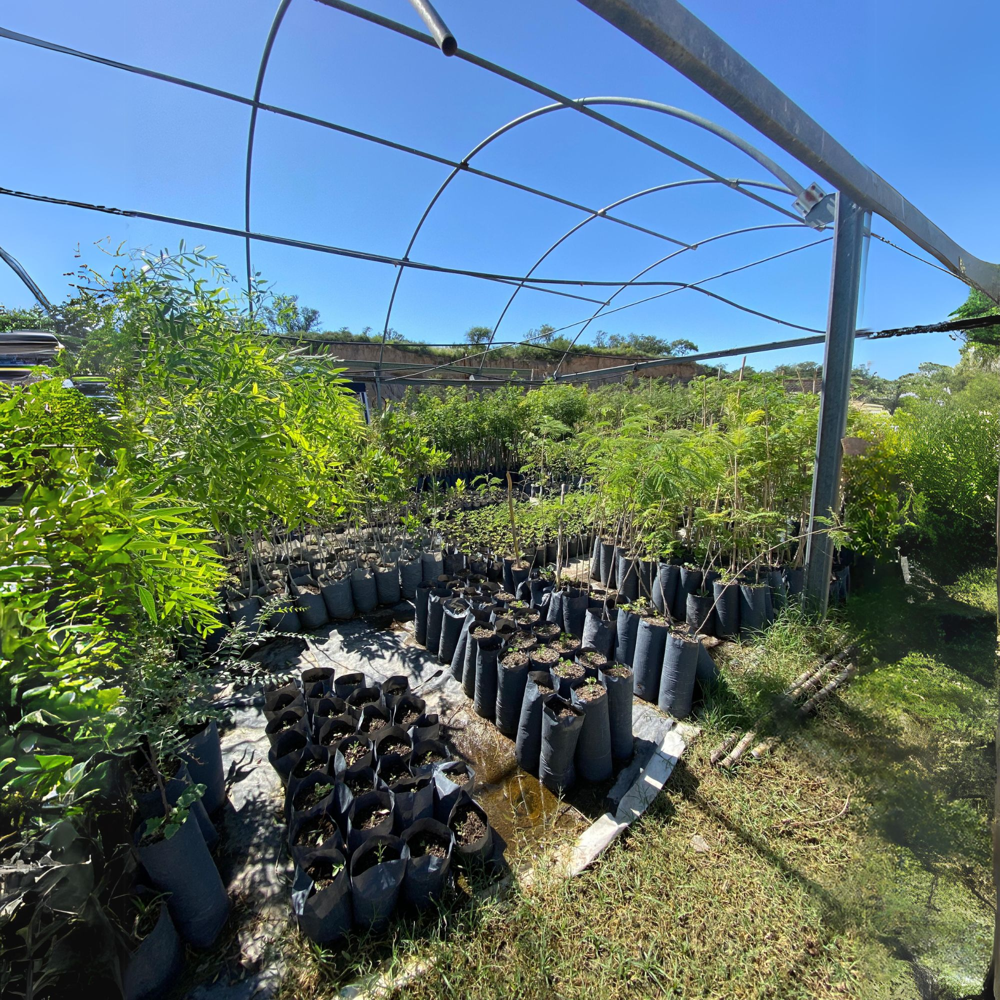

Las buenas noticias se comparten: Lanzamos un nuevo servicio.
¡Ahora podés separar también los residuos orgánicos!
EcoLink
Abril 2024
A partir de abril de 2024, mediante el servicio de Compostaje Colaborativo, también vas a poder separar tus residuos orgánicos y darles una segunda oportunidad. ¡Nosotros los buscamos por tu domicilio para la posterior obtención de abono orgánico!
Este es el primer servicio de recolección de residuos orgánicos compostables en Córdoba, y estamos comprometidos a cambiar la forma en que se manejan estos materiales.
Nuestro objetivo es recuperar el 50% de los residuos orgánicos que normalmente terminan en la basura, ofreciéndole una alternativa práctica y directa al compostaje domiciliario, que a veces puede resultar complicado si no se tiene tiempo, conocimientos o una compostera. De esta manera, ayudamos a reducir el impacto ambiental negativo que provoca el no gestionar estos residuos, y por otro lado ayudamos a nutrir el suelo y cerrar el ciclo de vida de los materiales orgánicos. Mediante este nuevo servicio recolectamos los residuos orgánicos y los trasladamos a Terra, empresa que se dedica al tratamiento del material y posterior obtención de abono orgánico para la reparación de suelos y producción de árboles nativos.
El servicio cuenta con recolección domiciliaria una vez a la semana y un kit de reciclaje, que incluye:
- Entrega de un Biotacho de 20 litros. Recomendamos compartir con vecinos. Rinde para el residuo orgánico de 4 personas.
- Entrega mensual de una bolsita 300cc de compost listo de Terra para tus plantas.
- Retiro semanal de los residuos y entrega de un nuevo Biotacho.
- Asesoramiento personalizado por Whatsapp.
¿Qué se puede colocar dentro del Biotacho? ¡Todo esto!: Restos de verduras y frutas; restos de yerba, té y café; granos, legumbres y cáscaras de huevo. También hojas, restos de poda, y pasto.
Si queres más información, contactanos aquí: